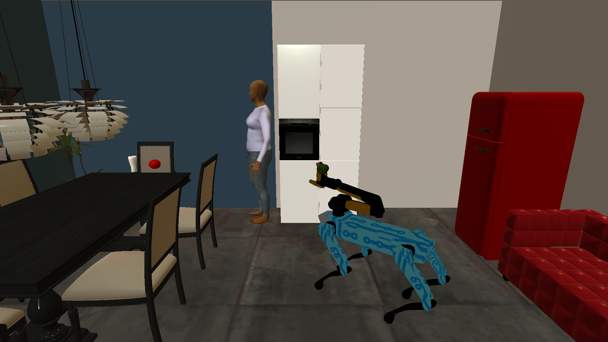
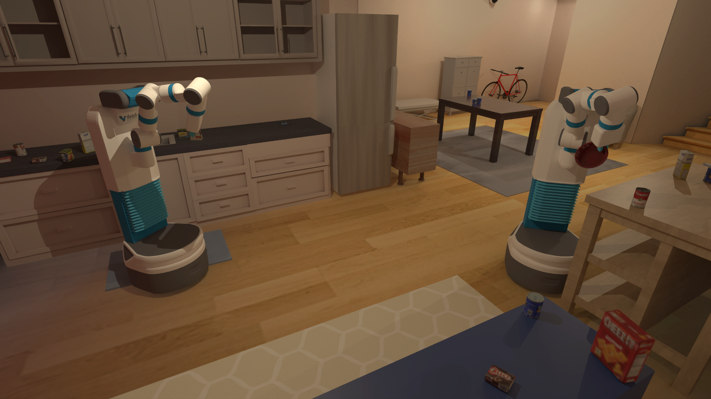

An inference delay changes what a robot does next. CollabTime closes the loop between hardware timing and physical execution to find where robots can wait—and where they cannot.
Delay sensitivity connects inference timing to task performance and compute allocation.
A
Replay misses part of the task loss.
In LeKiwi sorting with π₀.₅, adding 133 ms to every action chunk reduces objects sorted by 32% in closed loop. Fixed-trajectory replay predicts a 9% reduction.
A controlled delay intervention, compared with the corresponding no-delay baseline. The execution rule holds the robot until its action chunk arrives.
Reduction in objects sorted Lower is better
Open-loop replay
9%
Closed-loop execution
32%
Same 133 ms action chunk delay
B
How long can an action wait?
Delaying an action chunk has different consequences across skills and policies. Fetch is most sensitive during grasping; LeKiwi is most sensitive while carrying. LIBERO can continue executing buffered commands while waiting.
Figure 8 · Action-delay tolerance. Delay postpones a new System 1 action chunk in the named skill or phase; “Every” applies throughout execution. Zero means no imposed delay. Lines connect tested settings.
C
Coordinate reasoning with action inference.
On one Thor module, action priority temporarily holds System 2 while System 1 inference runs. In the LIBERO comparison, it lowers action latency and episode energy while matching observed solo-policy success.
π₀.₅ FP8 + Qwen3.5-9B NVFP4 · 400 matched episodes. Latency averages four suite medians. Module energy includes idle power.
GPU time slicingSelected configuration
View all six configurations
LIBERO on Thor; values shown in the manuscript comparison
Configuration
Action latency (ms)
Task success (%)
Module energy (J/episode)
03 / Workloads
Single robot and multi robot execution.
Task state, action buffering and replanning behavior determine how a delay affects progress. CollabTime evaluates these dependencies across six learned action policies.

PARTNR
Habitat · Task-level reasoning
LeKiwi
ManiSkill · Object sorting

Fetch
ManiSkill · TidyHouse rearrangement
The onboard comparison above uses LIBERO, a single robot manipulation benchmark. These household scenes show other workloads in the study; they are not images of the LIBERO experiment.
04 / In motion
Watch the workloads.
Recorded simulation demonstrations. These clips show the environments and robot behavior; the scheduler comparisons are reported in the results above.
LeKiwi · Two robots sorting
Two mobile manipulators sorting with π₀.₅ and Cosmos-Reason2-8B. The original CoHab demonstration shows the first simulated minute at 2× speed.
 CoHab policy
CoHab policy CoHab code
CoHab code